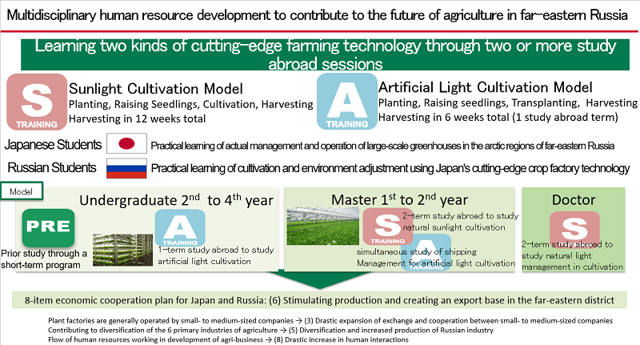

INTRODUCTION

Summary of Project
This program trains leaders for future agriculture, which include highly advanced Protected Horticulture, Plant Factory, Beekeeping, and IT utilization. Participants learn from diverse fields such as agricultural engineering, food marketing, crop cultivation, and the environmental control. Topics range from food production to distribution and sales businesses. Graduates will possess the skills to contribute to innovations in future agricultural techniques and participate in Russo-Japanese joint enterprises in the Russian Far East.
This program is divided into three parts: technological and practical aspects. The first part focuses on the “sunlight plant factories” and “artificial-light plant factories”, because these fields cover the core techniques, including environmental control, cultivation techniques, management, and device development, which will be used in future agriculture. The second part focuses on practical knowledge and necessary skills, including production process management, marketing, and life cycle assessment of Plant Factory and Organic Cultivation. The third part focuses on business innovation in Beekeeping and native crops. Throughout the program, participants are expected to deepen their understanding in engineering, marketing, and fields related to cultivation and environment.
This knowledge will contribute to train professionals versed in greenhouse businesses and in food businesses, which is considered to be one pillar of the Russia-Japanese joint enterprise in the Russian Far East.
Summary of Exchange program
Interactive students’ exchanges are promoted throughout the Pre-Masters (sophomore to senior), Masters, and Doctorate programs. The inbound exchange program is composed of two course types: the 6-week A-training on artificial-light plant factories and the 12-week S-training on sunlight plant factories. The outbound program is composed of two course types: the 6-week B-Training on business innovation and the 12-week T-training on production process management and marketing. These programs are comprised of lectures and exercises related to future agricultural techniques (plant physiology, cultivation management, environmental control, device development, facility management, products management and marketing) as well as internship programs intended for students to acquire skills in cooperation with companies.
Global Human Resource on the project
The aim is to train professionals who understand future agricultural techniques, which ranges from food production to distribution and sales, and can contribute to Russo-Japanese joint enterprises in the Russian Far East. As future agricultural techniques, which represents the “next-generation of agricultural diversification (called the senary industry in Japan)” is comprised of the distribution and consumption as well as production processes, global human resources in diverse fields such as horticulture, engineering, management, and marketing are required. In addition, we strive to nurture talent who can promote and manage businesses launched through Japanese and Far East Russian collaborations.
Feature on the project
This program has the following four characteristics:
- Training of specialists in future agricultural techniques in the cold Far East through Russo-Japanese cooperation
- Development of future agricultural techniques business professionals
- Training of cutting-edge technologies in artificial-light and sunlight plant factories
- Two to four opportunities for students to study abroad
